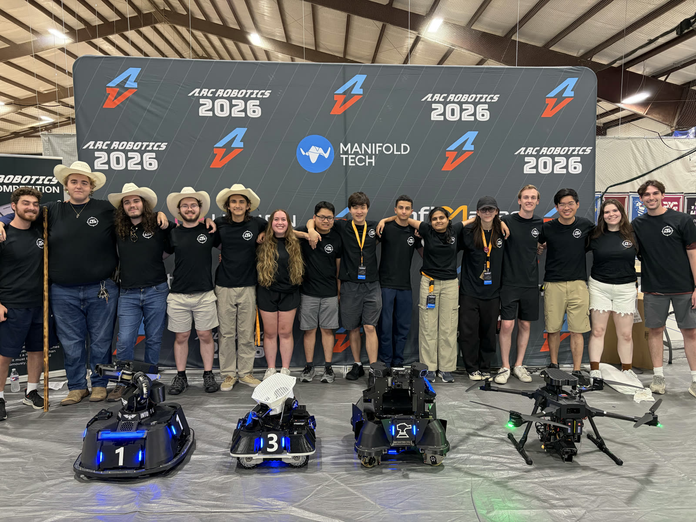
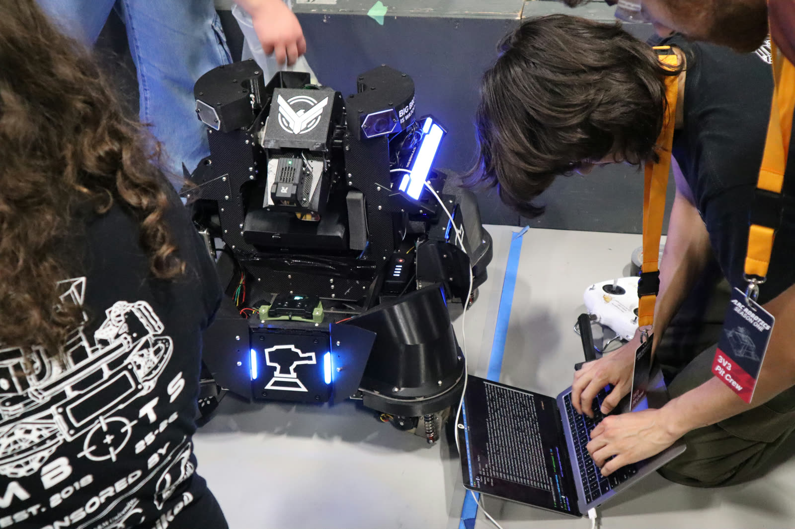
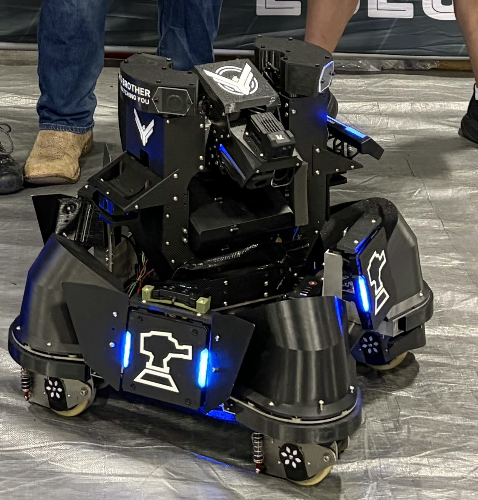
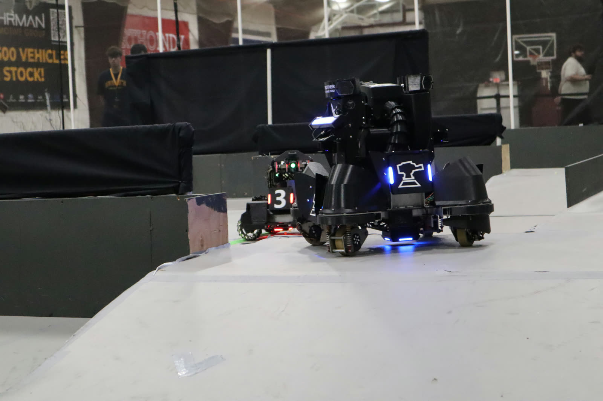

Electrical engineering student. Embedded systems, robotics autonomy, and state estimation.
I work where software meets hardware — autonomy stacks, embedded control, and the estimation math that makes a robot's idea of the world match the real one. For two years I led the software and autonomy team for Texas A&M's RoboMaster robotics team, where most of what I know came from having to make it work on real hardware, at a competition, on a deadline.



Wrote swerve drive odometry that streamed pose over UART to an NVIDIA Jetson running Nav2, merging two LD19 LiDARs into a single scan for AMCL localization and costmap-based obstacle avoidance. Prototyped in Gazebo and RViz2, then deployed on a fully autonomous robot that completed waypoint navigation at competition.
Researched Kalman filter, particle filter, and Interacting Multiple Model estimators to predict a spinning robot's rotation radius, spin rate, and center position for aiming. Derived three linear filters accurate to 3 cm and cheap enough to run on embedded compute — matching a state-of-the-art particle filter that needed a $1,000 GPU-class Jetson.

Before the team had the budget for better onboard compute, a teammate and I wrote Monte Carlo Localization from scratch out of Probabilistic Robotics — motion and measurement updates, resampling against raycast range readings, 1,000 particles converging on the true pose in real time — plus path planning on top of it, to work out whether we could run localization on the robot at all.
We retired it once new Jetsons made Nav2 practical. Writing the particle filter before using the library is why I know what AMCL is actually doing.
A handheld analyzer that sniffs UART, I2C, SPI, and CAN traffic and displays decoded payloads and live bus state on a mobile device. I own the bus sniffer modules — reading each protocol's framing, clocking, arbitration, and error conditions out of its specification and implementing the decoders in Verilog on an iCE40 UP5K FPGA.